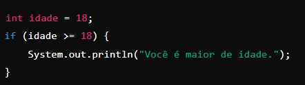

Condicionais são estruturas de controle que permitem a execução de diferentes blocos de código com base em determinadas condições. Em Java, as principais estruturas condicionais são if, else if, else, switch e o operador ternário ?.
- Estrutura if:
Essa estrutura é usada para executar um bloco de código se uma condição específica for verdadeira.

- Estrutura if-else:
Essa estrutura é usada quando precisamos executar um bloco de código se a condição for verdadeira e outo bloco se a condição for falsa.